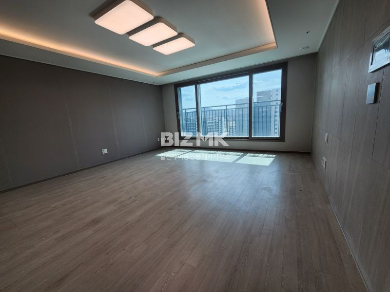
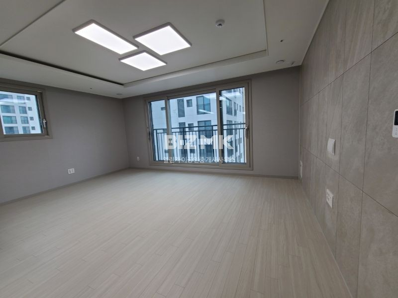
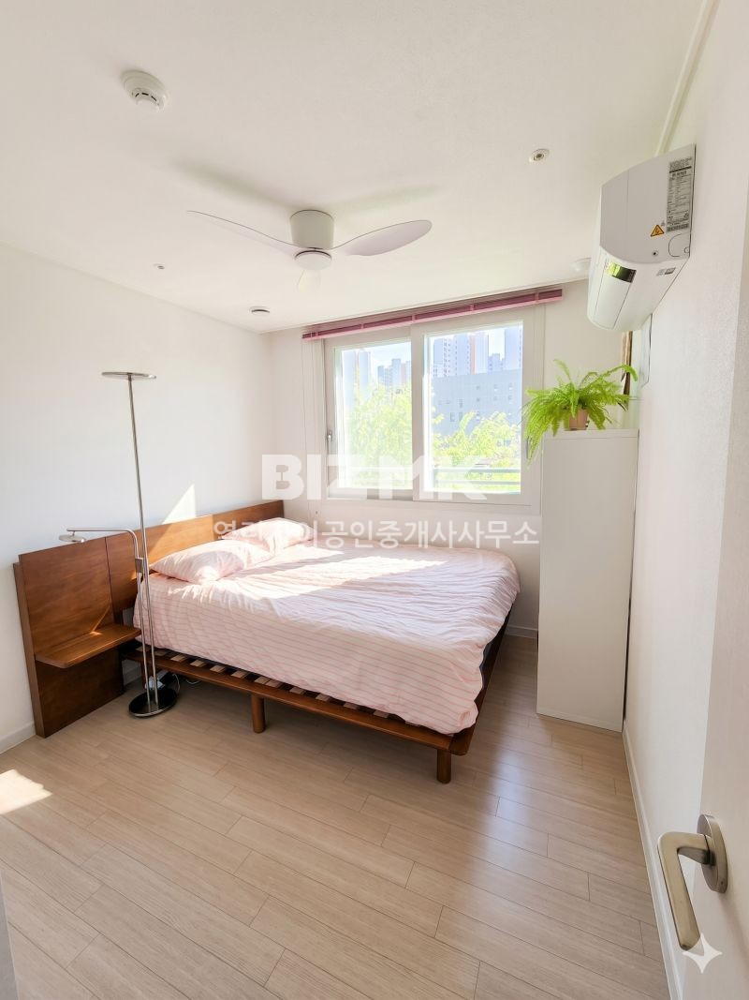
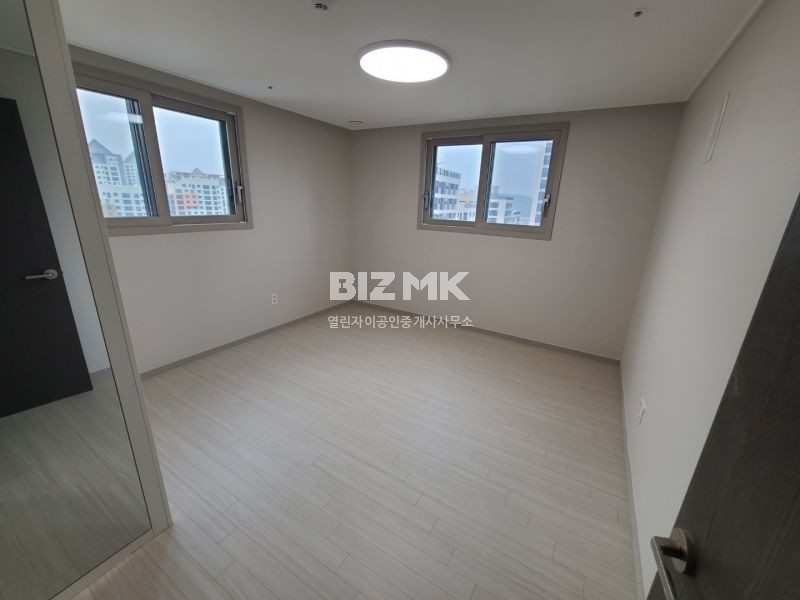
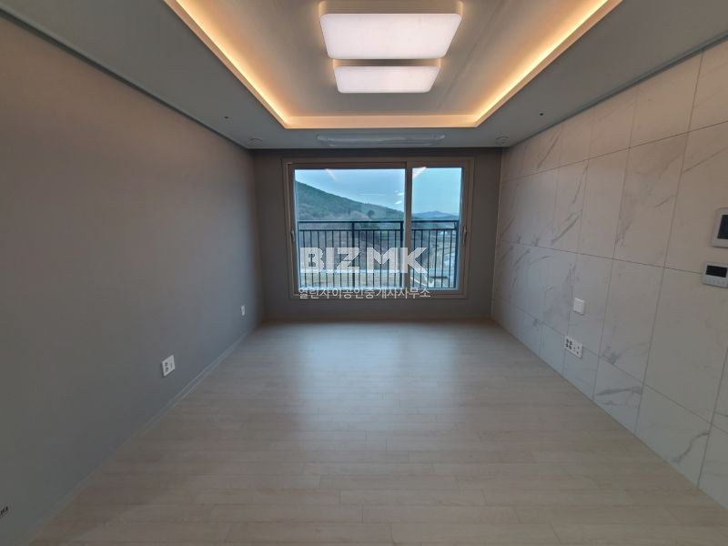
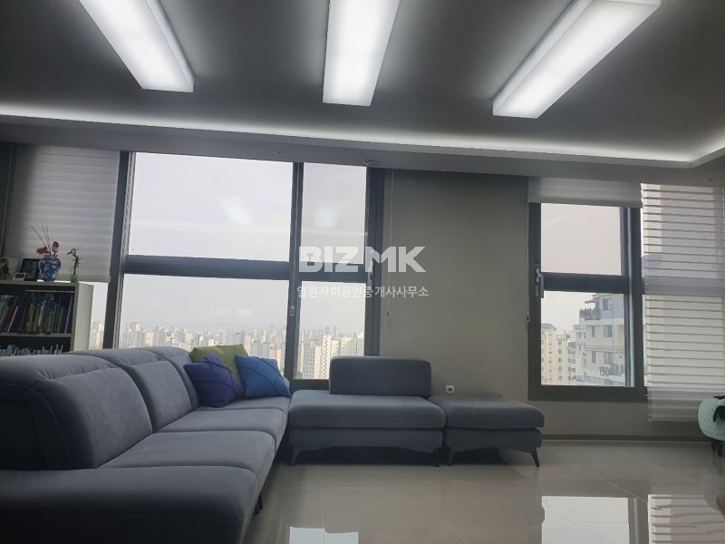
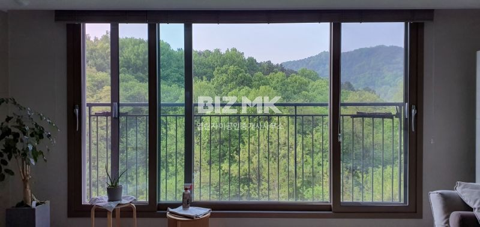
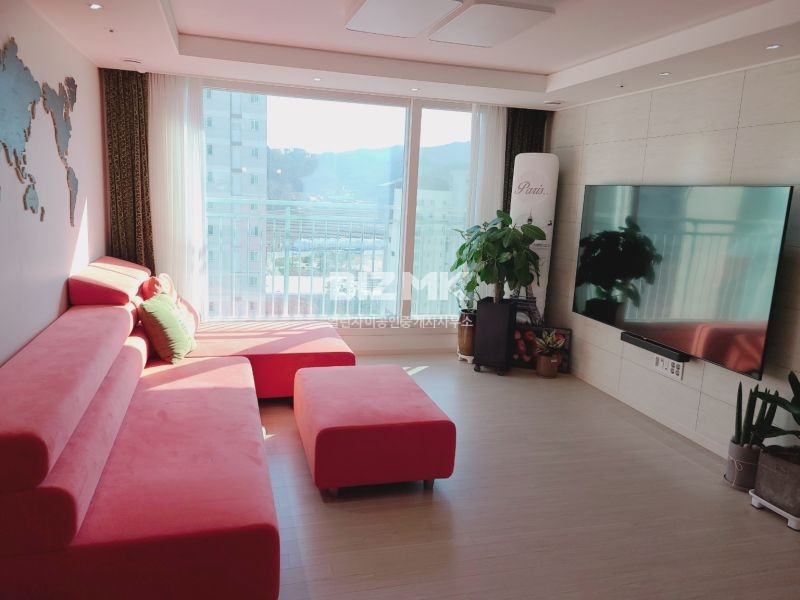

취급 단지·지역 안내
어느 단지를 찾으세요?
열린자이의 취급 단지와 지역별 매물을 살펴보세요.
 이 단지·지역의 등록 매물 사진
이 단지·지역의 등록 매물 사진새나루1단지자이e편한세상
매물 74건 보기 → 이 단지·지역의 등록 매물 사진
이 단지·지역의 등록 매물 사진새나루10단지파밀리에센트럴
매물 9건 보기 →
이 단지·지역의 등록 매물 사진세종하늘채센트레빌(새나루마을8단지)
매물 8건 보기 →
이 단지·지역의 등록 매물 사진세종더휴예미지(새나루마을3단지)
매물 8건 보기 → 이 단지·지역의 등록 매물 사진
이 단지·지역의 등록 매물 사진세종어울림파밀리에센트럴M4블록(새나루마을9단지)
매물 6건 보기 →
이 단지·지역의 등록 매물 사진새나루11단지세종어울림파밀리에센트럴
매물 4건 보기 →
이 단지·지역의 등록 매물 사진새나루4단지더휴예미지
매물 4건 보기 →집현동 단지내상가
매물 3건 보기 →집현동 대형사무실
매물 3건 보기 →
이 단지·지역의 등록 매물 사진세종하늘채센트레빌(새나루마을2단지)
매물 2건 보기 →
이 단지·지역의 등록 매물 사진가락19단지파라곤
매물 2건 보기 →집현동 복합상가
매물 1건 보기 →수루배6단지세종더샵예미지(L4블록)
매물 1건 보기 →
이 단지·지역의 등록 매물 사진수루배마을5단지
매물 1건 보기 →해들6단지e편한세상세종리버파크
매물 1건 보기 →
이 단지·지역의 등록 매물 사진새샘5단지한양수자인엘시티
매물 1건 보기 →김포북변우미린파크리브
매물 1건 보기 →집현동 대
매물 1건 보기 →반곡동 일반상가
매물 1건 보기 →연서면 단독
매물 1건 보기 →집현동 일반상가
매물 1건 보기 →장군면 일반상가
매물 1건 보기 →
주력 단지 안내
새나루1단지자이e편한세상
세종시 세종시 남세종로 160
- 세대수
- 1,200세대
- 동 수
- 18개 동
- 사용승인일
- 2021.11.25
- 난방
- 지역난방
- 총 주차
- 1,800대
- 세대당 주차
- 1.5대
단지 기본 정보: 리치고 · 개별 매물 조건과 다를 수 있습니다.
집을 찾으며
궁금했던 것들
단지와 중개소에 관해
확인할 수 있는 정보를 정리했습니다.
열린자이공인중개사사무소의 전체 매물은 어디서 볼 수 있나요?
열린자이공인중개사사무소의 매물 메뉴에 확인 시점의 네이버 등록 매물 134건을 모두 모았습니다. 주력 단지 외의 취급 단지와 지역도 함께 살펴볼 수 있습니다. 각 매물에는 네이버 원문 링크가 연결되어 있습니다. 가격과 거래 가능 여부는 원문과 중개소에서 다시 확인해 주세요.
새나루1단지자이e편한세상는 몇 세대인가요?
새나루1단지자이e편한세상는 1,200세대, 18개 동으로 구성돼 있습니다. 단지 기본 정보는 리치고 단지 자료를 기준으로 안내합니다.
새나루1단지자이e편한세상 사용승인일은 언제인가요?
단지 자료에 기재된 사용승인일은 2021.11.25입니다. 사용승인일과 개별 세대의 실제 입주일은 다를 수 있습니다.
새나루1단지자이e편한세상 주차 공간은 어느 정도인가요?
단지 자료상 총 1,800대, 세대당 1.5대입니다. 방문 차량 등록과 주차비 등 현재 운영 규정은 관리사무소 확인이 필요합니다.
새나루1단지자이e편한세상 난방 방식은 무엇인가요?
단지 기본 정보상 지역난방입니다. 세대별 관리비와 사용량은 개별 매물 상담 때 확인해 주세요.
열린자이공인중개사사무소는 어디에 있나요?
네이버 중개소 프로필에 등록된 주소는 세종특별자치시 집현동 883-139 근린생활시설동 새나루마을1단지 1층 1호입니다. 오시는 길 메뉴에서 지도 검색과 중개소 원문으로 이동할 수 있습니다.
매물 상담은 어떻게 하나요?
044-905-0887로 전화하시거나 네이버 중개소 페이지에서 문의하실 수 있습니다. 관심 매물 번호, 희망 예산과 입주 시기를 함께 알려주시면 상담에 도움이 됩니다.
전세·월세도 확인할 수 있나요?
매물 메뉴의 거래 종류 필터로 나누어 볼 수 있습니다. 단지·지역과 매물 유형도 함께 선택할 수 있습니다. 월세는 보증금과 월 임대료를 함께 표시합니다.
집을 보러 가기 전에 무엇을 준비하면 좋나요?
희망하는 전용면적, 예산, 입주 날짜와 관심 매물 번호를 정리해 주세요. 실제 방문 가능 시간은 중개소와 미리 조율하는 것이 좋습니다.
가격과 매물 정보는 언제 기준인가요?
이 홈페이지 미리보기에는 2026.10.23에 확인한 네이버 전체 등록 매물 134건이 표시됩니다. 자동 갱신 전의 자료입니다. 이후 가격 변경·거래 완료가 생길 수 있으므로 네이버 원문에서 최신 상태를 확인해 주세요.